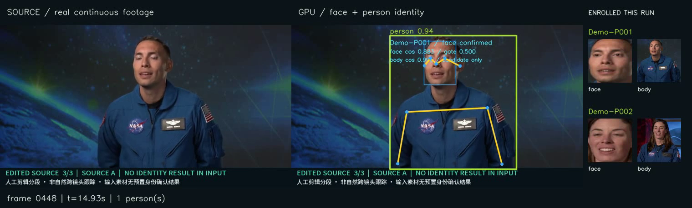
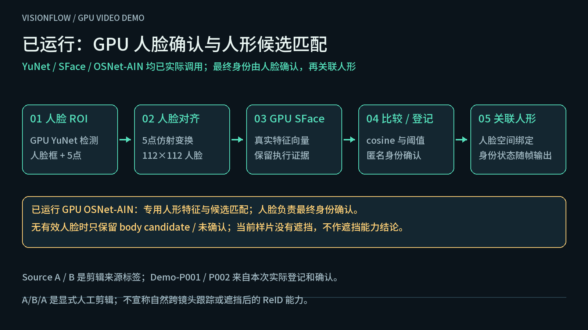

人脸确认，再关联人形。
已实际运行GPU YuNet + SFace + OSNetA → B → A运行 gpu-20261112-175719-f27110 · RTX 3090 · 225 个输出帧 / 15fps / 15 秒。原视频30fps、stride=2；每个输出帧均有实际模型结果。匿名 Demo-P001 / Demo-P002 不是真人姓名识别。
实际人脸与人形身份结果
原图、实际识别叠加和本次登记图库并排连续播放。Source A/B 只是素材分段标签；身份标签来自实际推理与确认规则。
首帧实际登记 P001，之后74帧经人脸确认；本段75个主人体结果均为 P001。
B 首次与 A 的 face cosine 为0.1717，低于本次阈值0.5，未误认成P001；实际登记为P002，主人体75帧均为P002。
A 再出现后75帧均确认为原P001；face cosine 为0.8355–0.9559，高于本次阈值0.5。
B段4帧另有接近重叠的额外人体检测框；这些框无独立有效人脸，仅作为 body candidate，未确认、未新增身份。最终图库2个匿名身份。cosine是相似度，不是概率；当前阈值只用于本演示。
GPU 调用与真实状态
| 模型 / 环节 | 本次实际记录 | 含义 |
|---|---|---|
| YOLO26m pose / TensorRT | 原生成功推理计数 +225 | 人物框与姿态 |
| YuNet / GPU 实例 | +225 | 人脸框与五点 |
| SFace / GPU 实例 | +225 | 人脸特征，最终身份确认 |
| OSNet-AIN / GPU 实例 | +229 | 人体独立特征，提供候选；多4次对应额外框 |
服务容器内的设备查询确认 RTX 3090，配置与调用计数见运行清单。模型清单记录来源与图契约；GPU运行证据以本次运行清单为准。预处理、对齐、比较和绘制仍有CPU步骤，不据此宣称全部算子都在GPU或无运行时回退。
同次运行的真实结果帧
下面是 A 返回时的实际视频画面；右侧保留本次登记的 P001 / P002 人脸与人形原始裁剪。

15 秒身份验证输入
两段 NASA 官方访谈的动态剪辑：同一人 A → 不同人 B → A 再出现。每段常驻人工剪辑标识，不能据此宣称自然跨镜头跟踪。
三个阶段的实际登记与确认


人脸与人形的确认边界

人脸特征比较通过后，才能将匿名身份空间关联到对应人形。姿态框、同一衣服或持续出现本身不足以证明身份；没有可用人脸时，只展示人形跟踪或待确认状态。
OSNet-AIN独立人形特征已实际运行，但在本演示中只作候选匹配，不能独立确认身份。当前输入没有遮挡场景，也不声称已演示遮挡追踪。A/B/A为显式人工剪辑，单个公开剪辑不代表大规模准确率、自然跨镜头识别能力或生产阈值已验证。原有 Kafka、S3、Milvus 全流程也需要独立运行记录。